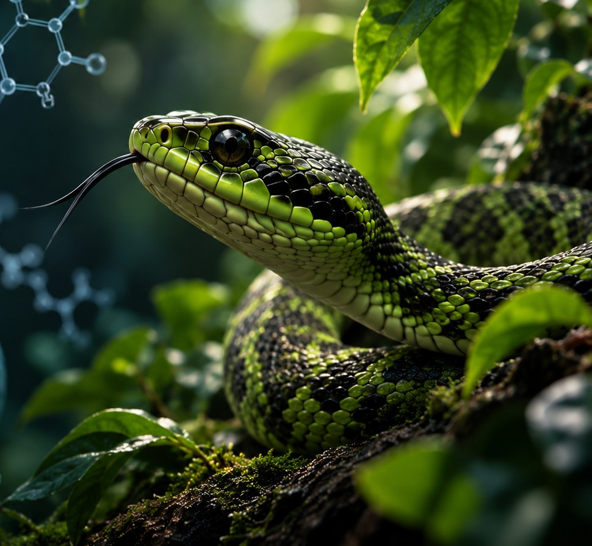

About Me
A curious student with a passion for discovery.
I'm a Transition Year student at Rath Dara Community College with an academic focus in biochemistry and herpetology. I've shown strong, measurable performance in science throughout school, and I'm pursuing future work in the biological sciences — with a particular interest in venom toxinology and how it can be applied to medicine.
Science
Nature
Technology
Real-World Impact
Skills
What I bring
Research & Projects
Where curiosity meets science.

Herpetology & Venom Toxinology
Independent research into snake species, venom composition and toxin biology — with a focus on how venom can be applied to modern medicine.
- 75+ snake species classified and studied
- Researching venom-derived medical applications
Python & Computer Science
Selected for the TY Computer Science Programme, building foundations in Python, micro:bit and basic programming.
- Hands-on Python & micro:bit projects
- Growing interest in problem-solving through code
Pharmaceutical Science & Biochemistry
A strong focus on chemical applications and pharmacology, preparing for a hands-on TY work placement with a local pharmacy.
- Preparing for a clinical pharmacy placement
- Exploring the crossover between toxinology and pharmacology
Education
Education
Rath Dara Community College
DublinJunior Cycle · 2023–2026 (awaiting results) — Currently in Transition Year (TY)
- Track record of high academic performance, with distinctions in science, geography, French and mathematics on multiple occasions
Achievements
Accomplishments & Awards
Student of the Year
Consecutive Winner
Awarded the top academic and character prize out of the entire year group for three consecutive years (1st, 2nd and 3rd) at Rath Dara Community College.
Attendance Awards
1st, 2nd & 3rd Year
Received attendance awards in 1st, 2nd and 3rd year, with zero absences recorded in 2nd year.
Golf Scholarship
Fully Funded
Selected as a player to receive a fully funded club scholarship, including clubs, professional coaching and membership privileges until age 18.
My Goal
To learn. To explore. To make an impact.
Contact
Let's talk
Interested in my research, my TY placement, or just want to say hi? I'd love to hear from you.
Or email me directly at zainarif09@gmail.com
🎓 Rath Dara Community College, Dublin · References available on request